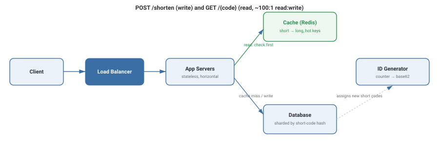

Design a URL Shortener
Design a service like bit.ly or TinyURL: given a long URL, return a short one that redirects back to the original. It's the "hello world" of system design interviews — small enough to finish in 45 minutes, but it touches encoding, caching, database sharding, and read/write asymmetry, all of which show up again in every harder case study on this site.
Requirements
- Given a long URL, generate a unique short URL.
- Given a short URL, redirect to the original long URL.
- Optionally: let users pick a custom alias, and expire links after a set time.
- Redirects must be low-latency — this sits on the critical path of someone's click.
- Highly available — a shortener that's down breaks every link that uses it.
- Read-heavy: far more redirects happen than new links get created.
Capacity Estimation
This is the step interviewers are actually listening for — not perfect numbers, just that you can turn a vague scale ("popular service") into concrete traffic and storage figures.
| Assumption | Value |
|---|---|
| New URLs shortened per month | 500 million |
| Read : write ratio | 100 : 1 |
| Write QPS (new links) | ~193 / sec |
| Read QPS (redirects) | ~19,300 / sec |
| Average record size (long URL + metadata) | ~500 bytes |
| Storage over 5 years | ~15 TB |
| Short code length needed (base62) | 7 characters |
The write QPS is trivial for a single well-indexed database. The read QPS is the real number — 19K redirects/sec is exactly the kind of load that turns "add a cache" from a nice-to-have into a requirement.
High-Level Design

A write (POST /shorten) asks the ID generator for a unique code, stores {short_code → long_url} in the database, and returns the short URL. A read (GET /{code}) checks the cache first; on a hit it issues an HTTP 302 redirect immediately; on a miss it falls back to the database, redirects, and populates the cache for next time.
Deep Dive
Generating unique short codes
The core trick: maintain a global auto-incrementing counter (via a dedicated counter service, or a database sequence), then encode that integer in base62 (a-z, A-Z, 0-9) to get a short, unique, URL-safe string. A 7-character base62 code covers 627 ≈ 3.5 trillion values — far more than the ~30 billion URLs this system will store over 5 years.
def encode(id: int) -> str:
chars = "0123456789abcdefghijklmnopqrstuvwxyzABCDEFGHIJKLMNOPQRSTUVWXYZ"
if id == 0:
return chars[0]
short = []
while id > 0:
id, rem = divmod(id, 62)
short.append(chars[rem])
return "".join(reversed(short))
def decode(short: str) -> int:
chars = "0123456789abcdefghijklmnopqrstuvwxyzABCDEFGHIJKLMNOPQRSTUVWXYZ"
id = 0
for ch in short:
id = id * 62 + chars.index(ch)
return id
# encode(125) -> "cb" decode("cb") -> 125The alternative — hashing the long URL (e.g., MD5, take first 7 chars) — seems simpler but risks collisions (two different URLs producing the same short code), which the counter approach avoids entirely by construction.
Why redirects should be a 301 or 302, and why it matters
A 302 (temporary redirect) forces every click to hit the shortener service, which is what makes analytics (click counts) possible, at the cost of extra load. A 301 (permanent redirect) lets browsers cache the redirect and skip the shortener on repeat visits — faster for the user, but the service loses visibility into repeat clicks. Most production shorteners choose 302 specifically to keep click analytics.
Why the cache matters more than it looks
URL access follows a strong power-law distribution — a small fraction of links (viral posts, popular campaigns) account for a large fraction of all reads. An LRU cache naturally keeps exactly those hot links in memory, so even a cache sized for a small fraction of total URLs can absorb the overwhelming majority of read traffic.
Trade-offs
- Guaranteed no collisions, short codes, simple to reason about.
- Needs a coordinated counter (single point unless sharded/batched).
- No coordination needed — any server can compute a code independently.
- Collisions are possible and must be detected and retried, adding complexity.
What interviewers are listening for: that you estimate before you design (traffic numbers should drive whether you even need a cache or sharding), and that you can defend the counter-vs-hash choice instead of just picking one.
If you're a fresher: being able to sketch the cache-first read path and the counter-based write path, with rough traffic numbers, is a strong answer on its own.
If you're ~3 years in: you should be ready to discuss counter sharding (e.g., pre-allocating ID ranges per server to avoid a single bottleneck) and custom-alias handling without breaking uniqueness guarantees.
Interview Questions
Click a question to reveal the answer.
Why use a counter + base62 encoding instead of hashing the URL?
Hashing a URL (e.g., MD5 truncated to 7 characters) can produce collisions — two different long URLs mapping to the same short code — which then requires a collision-detection-and-retry loop. A global counter encoded in base62 guarantees uniqueness by construction: every ID is assigned exactly once, so there's never a collision to detect.
How would you scale the ID generator so it isn't a single point of failure or bottleneck?
Pre-allocate blocks of IDs to each app server (e.g., server A gets IDs 1–1000, server B gets 1001–2000) so servers can generate codes locally without contacting a central counter on every request, only when a block runs out. This trades a small amount of ID-space "waste" (unused IDs if a server restarts) for removing the counter as a per-request bottleneck.
Why is this system read-heavy, and how does that shape the design?
Every shortened link gets clicked far more often than it gets created — a 100:1 read:write ratio is a reasonable assumption. This pushes the design toward aggressive caching (an LRU cache absorbs most reads thanks to the power-law popularity of links) and toward optimizing the redirect path for latency, since that's the path users actually experience.
How would you support custom aliases (user-chosen short codes) without breaking the uniqueness guarantee?
Custom aliases go through a separate check-and-insert path: attempt an atomic "insert if not exists" against the database keyed on the requested alias. If it already exists, reject the request and ask the user to pick another. This is independent of the counter-based path used for auto-generated codes, since custom aliases aren't sequential.